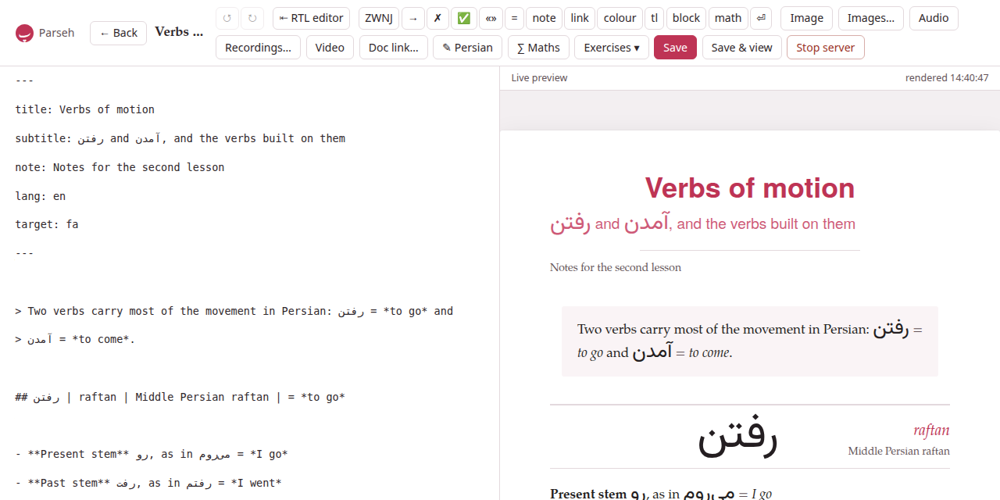
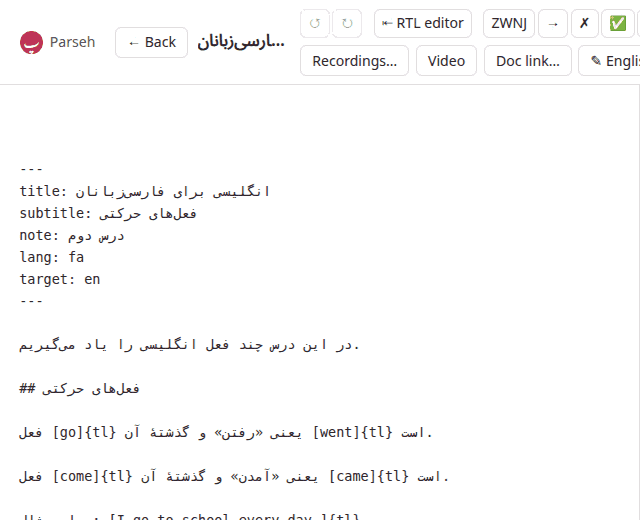

Writing in the editor
The editor opens from Edit on a document’s page (/studio/doc/<id>/edit) and from + New on the library (/studio/new). The Markdown is on the left; on the right, under Live preview, is the document as its page will show it, drawn again a third of a second after you stop typing. It is drawn by the same renderer as the document page, so the preview is the document: what you see there is what a reader sees.

The line beside Live preview says when the preview was last drawn (rendered 14:02:31), or render error and why. A target: naming a language the toolbox does not teach is said there too — unknown target language ‘xx’ – rendered as Persian — and the document is drawn as Persian until you correct it.
On a screen narrower than a tablet’s the two panes are stacked, the source above the preview, and the toolbar wraps onto as many rows as it needs.
1. The front matter#
The lines between the two --- at the top of a document are its front matter, and the editor follows them as you type:
title:- is the document’s name: the name the library shows, the name a link to it spells, and unique in the library — see Names and links.
subtitle:- and
note:are the lines under the title. lang:- is the language you write the prose in (
en,it,fa,pt…). It picks the hyphenation of the PDF — and, when it is a right-to-left language, the direction of the editor itself (below). target:- is the language the document is about (
fa,ja,it…). Change it and the preview is drawn in that language at once, with its face and direction, the kana button appears or goes, and the target-text button takes the language’s name. On the next save the document moves to that language’s shelf of the library.
A new document starts with the target: the toolbox’s language is set to.
2. Saving#
- Save
- — or Ctrl+S, ⌘S on a Mac — writes the document. The first save of a new document creates it, and the editor opens again at its own address; a later save says Saved at the bottom of the page and puts the new title in the bar.
- Save & view
- saves and opens the document’s page.
- ← Back
- goes to the document’s page, or to the library for a document not saved yet.
The editor knows when you have written something since the last save, and the browser asks before leaving the page — ← Back, a closed tab, a reload — while it has. Both save buttons are greyed out while a save is on its way, so a second press cannot make a second document.
A save that changes the title renames the document. If the new title is one another document of the library has, nothing is written and the dialog This name is already in use opens, with your text left exactly as it is in the editor; cancel it and the editor says Not saved: that name is taken — nothing was written. A rename is followed by every link in the library that named the document by its old name. When the save rewrote a link in the document itself (a link to itself, or to a document renamed meanwhile from another tab), the editor takes the rewritten text back, as an edit you can undo. See Names and links.
A save also brings in the files the text names and the document does not have yet: a starter’s picture, a clip from the clip tray (see Pictures and recordings in a document). And a save that changes nothing at all leaves a built PDF as it was; one that changes the text marks it source changed.
3. History: ↺ and ↻#
↺ undoes and ↻ redoes, as do the shortcuts of every platform: ⌘Z and ⇧⌘Z, Ctrl+Z and Ctrl+Shift+Z, Ctrl+Y. The editor keeps its own history, three hundred steps deep, so that everything it writes for you — an insert, a picture, a colour chosen in the preview, a rename taken back — can be undone like typing. Fast typing counts as one step. Each button is greyed out when there is nothing to undo or redo.
4. ⇤ RTL editor#
The source box is written left to right, in a monospaced face. For a document whose prose is a right-to-left language — a Persian writing in Persian to teach English to Persians — that puts every full stop, question mark and heading mark of the prose at the wrong end of its line. ⇤ RTL editor, in the bar’s Editor group, turns the whole source right to left; the button then reads ⇥ LTR editor, and turns it back. The button always says what a click does, and its tooltip says which way the source goes now.

Right to left, the source is set from the right, a step larger, in a face made for the script: the prose language’s (Vazirmatn for Persian, Noto Naskh Arabic for Arabic), or else the target’s, when that is a right-to-left language. Every line is then right to left, the dialect’s own lines too: a key whose value is a Persian sentence — a prompt:, a meaning:, an answer - [x] — has its key on the right and its full stop on the left, where the sentence ends. A line of Latin letters alone, such as a :::exercise fence or an English context:, reads the way any right-to-left editor draws it, its ::: on the right and an English full stop on the left. Left to right, the source keeps its monospaced face.
Only the source box changes. The preview, the document’s page and its PDF are drawn as they always are — the button is about how you write the source, not about how the document is laid out. The exercise form’s own ⇤ RTL and ⇥ LTR buttons are their own, and the panes stay lined up. Inserts, pasted and dropped pictures, undo and redo all work the same either way.
Until you press it, the source goes the way the prose language of lang: is written: a document with lang: fa or lang: ar opens right to left, every other left to right, and typing another lang: into the front matter turns it. Once pressed, the choice is the document’s, kept in this browser. A new document keeps the choice made for it with its page (a reload keeps it) and takes it as its own when it is first saved; the next new document starts again from its own lang:.
5. Insert at cursor#
The bar’s Insert at cursor group puts a piece of the dialect in at the cursor. Only four buttons wrap the text you selected — tl, kana, block and math; with nothing selected they put in an empty mark with the cursor inside it. Every other one puts its piece in place of a selection: select WORD and press colour and you get []{teal}, with WORD gone. Press them with nothing selected — or undo (Ctrl+Z), which brings the selection’s text back.
| Button | What it puts in |
|---|---|
ZWNJ | the zero-width non-joiner, the Persian half-space (میروم) |
→ | an arrow |
✗ | the mark of an ungrammatical form: the form after it is shown in red |
✅ | the mark of a correct form (it colours nothing) |
«» | a pair of guillemets, the cursor between them |
= | the = of a gloss, with a space on each side |
note | a footnote, through a dialog (below) |
link | a web link, [testo](https://), the cursor where the address goes |
colour | a colour mark, []{teal}, the cursor inside the brackets |
tl | wraps the selection as a block of the target language, […]{tl} — over several lines when the selection is — and is how a run of a Latin-script target is marked |
kana | wraps the selection as […]{kana:}, the cursor where the reading goes (only for a language with a reading: Japanese) |
block | wraps the selection as a Latin block, […]{la} |
math | wraps the selection as a formula in the line, […]{math} |
⏎ | a forced line break |
What each mark means, and every option it takes, is in the dialect section.
The footnote dialog#
note asks for the note’s Name (optional) and its text, then does the two things a footnote needs: the reference [^name] goes in at the cursor, and the note itself is placed among the other notes at the foot of the document in the order the reader meets them. Left empty, the name is n1, n2…, the first one free; a name already in use is refused rather than merged with the other note. Insert note puts it in.
6. The target-text editor: ✎ Persian#
Typing a long stretch of Persian or Arabic into a box set left to right is hard to follow. The button that bears the target language’s name — ✎ Persian, ✎ Japanese… — opens a large box set in that language’s direction and face. Every line you type there becomes a real line (a ⏎ in the Markdown); square brackets are not allowed in it and are taken out. Under the box, what the language offers:
- Font
- — the language’s other face, where it has one: nastaliq for Persian, gothic for Japanese.
- Background
- — a tint behind the block: quote, sand, rose, sage or lilac.
- vertical
- and height — for a language that can be set vertically (Japanese, Chinese): the block in columns, top to bottom, right to left, each column as tall as the height says (8 to 60, in ems; 22 unless you say otherwise).
Insert puts one line in at the cursor as […]{tl} with the options you chose; several lines, or a vertical block, go in as a block of their own.
Editing a block you already have: point at a target-language block in the preview and a small ✎ with the language’s code appears at its corner. Click it and the same box opens with the block’s lines and options, titled Edit Persian block; Save writes the change into the Markdown, as one step you can undo. A paragraph the studio sets as the target language by itself (one with no Latin letters) stays plain text until you add a Latin word to it through this box, when it becomes a […]{tl} block.
7. The maths sheet: ∑ Maths#
∑ Maths opens a sheet for a formula: the notation on top, in LaTeX, and the formula drawn under it as you type, by the same program that draws it on the page. A mistake is shown in that program’s own words (Missing close brace) instead of a formula. Choose in the line — the formula goes in at the cursor as […]{math} — or on its own, a :::math block on lines of its own. Insert (or Ctrl+Enter) puts it in; Escape closes the sheet. Text selected when you press the button is the formula the sheet starts from, and what you insert takes its place.
The exercise form has the same sheet on its own ∑ Maths… button, which writes into the field you were last in: see Exercises in the editor.
8. Links to other documents: Doc link…#
Doc link… lists the other documents of the library, to link to one by its name: see Names and links.
9. Tools in the preview#
The preview is not only to look at. Everything the document page lets you do to the text with the mouse works in the preview too, and writes into the editor’s text — saved or not — as an edit you can undo:
- pointing at a word of the target language opens its palette: a colour, a transliteration, a reading (see Reading, annotating and practising);
- a click on a picture, or on ⚙ at a player’s corner, opens its layout panel, and a click on a Latin block opens the block’s (see Pictures and recordings in a document);
- ✎ Edit on an exercise reopens it in the exercise form (see Exercises in the editor).
In the preview the exercises are drawn solved — the answers in place, both sides of every flashcard shown (front and back shown in preview) — because you are writing them, not answering them. There is no Check exercises and no + Deck here; those are on the document page.
10. Aligned panes#
A line of Markdown and the block it becomes are rarely the same height, so two panes scrolled side by side soon disagree about where you are. The editor keeps them together: the renderer tags every block of the preview with the source line it starts on, the source box’s line spacing and top margin are fitted to all those anchors at once, and scrolling either pane scrolls the other to the matching place — measured anew on every redraw and whenever the window changes size. You scroll the source, and the preview shows what you are looking at.
11. The rest of the bar#
Image, Images…, Audio, Recordings… and Video are for the document’s pictures, recordings and videos: see Pictures and recordings in a document. Exercises ▾ is Exercises in the editor. Stop server stops Parseh, after asking.